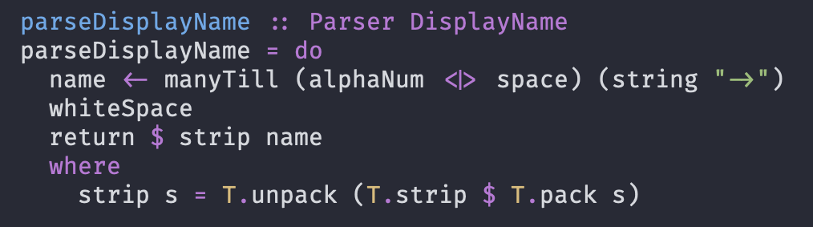
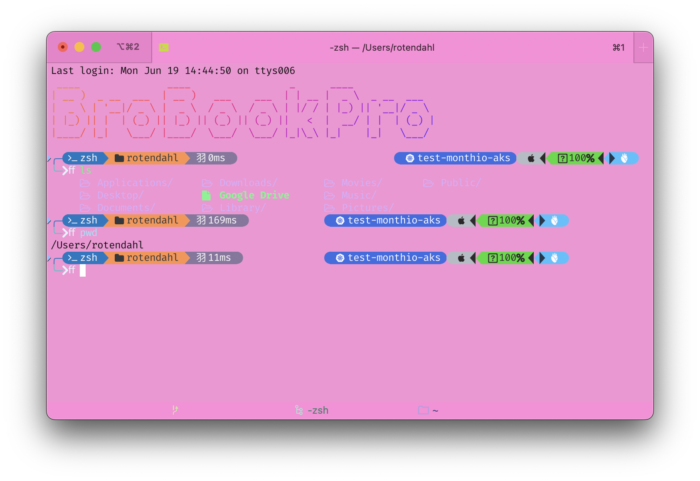
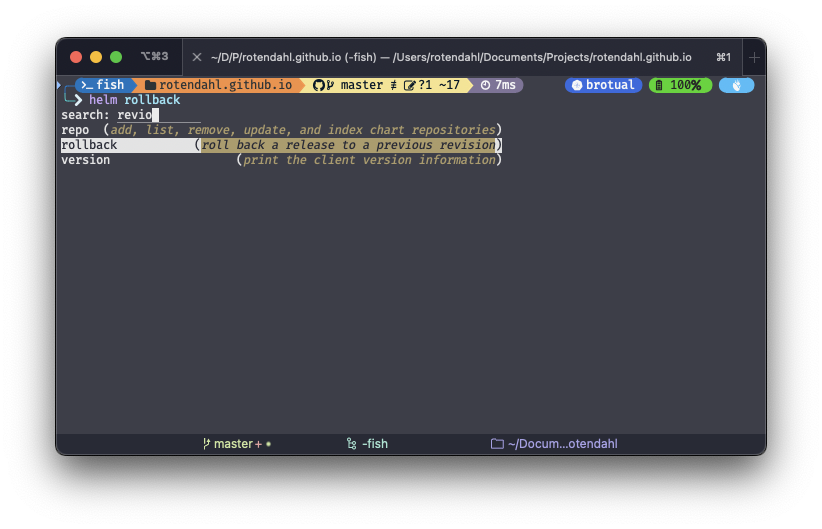

1 Introduction
Back at university the first programming course was taught using emacs in a terminal, none of that fancy GUI editors. My TA strongly encouraged everyone to follow their mantra of:
If it can be done in the terminal, it should be done in the terminal
I took this to heart and have spent way to much time over the years playing around and customizing my shell. In this post I will describe how my shell is configured and how the individual parts work. I’ll assume that you have some familiarity with the shell and not focus on specific workflows. My setup is for MacOS, but most should apply to linux/WSL as well.
2 Picking a terminal emulator
The first step is to pick a program for our OS to display a terminal window. Your OS comes with one built in, for MacOs it’s the aptly named Terminal.app. The built in app is fine but has a limited feature set. I use iterm2, and have done so for almost a decade. Iterm is Mac only, if you want a cross platform emulator I’ve heard good things about the electron based hyper.is.
2.1 Setting up Iterm2
First install Iterm2 either via the download link on their website or via brew as described in Section 3.
brew install iterm2Iterm2 has an almost comical amount of configuration options and features. For a full list see their documentation and feature overview. I’ll go over the most important parts.
2.2 Fonts
Fonts are becoming a more integral part of the terminal experience. Fonts are no longer just how letters are rendered. Via ligatures, icons, and powerline glyphs fonts affect how the terminal looks and functions. The Nerd fonts project is a collection of programmer friendly fonts with all the features above enabled. To get them on your mac you can use brew:
brew tap homebrew/cask-fonts
brew install font-hack-nerd-fontI prefer the Fira code font, but all the nerd fonts are quite nice. In iterm you have to set the font for each profile you use and enable ligatures. For a better powerline/glyph experience don’t use the monospaced version of the fonts as the icons will be to small.

2.3 Profiles and themes
I have the following three profiles in iterm:
- Free floating: My default profile used for new windows (Cmd-nCmd-n).
- Hotkey window: Pressing (Ctrl-CtrlCtrl-Ctrl), drops down a window in “visor mode” from the top of the screen. Once you get used to always having a shell a quick double tap away it’s hard to go back.
- Danger Zone: A profile automatically trigged for when my K8s context is my non default.

Automatic profile switching
At my current job each developer has their own kubernetes cluster and we often use each other’s or switch to the staging/test cluster. I’ve setup that any non default cluster activates the danger zone profile. Having a clear visual distinction between default and non default contexts makes me more comfortable running commands such as helm rollback.
The feature to automatically switch profile in Iterm is not made for k8s. Instead it listens to username and hosts which works for ssh based workflows. My workaround has been to add a trigger to all my profiles that report the username and host as prod@prod whenever the regEx \udb84\udcfe (?!brotual)1 does not match my prompt.
2.4 Theme
Besides the eye catching Unikitty theme used for the Danger Zone profile my theme of choice is the is the awesome dracula theme. Besides beeing pretty but not to flashy, there are implementations for almost any tool.
2.4.1 Embracing the light
Like a true programmer I prefer dark mode but from time to time I use a light theme for programming. Another benifit is the ability to quickly switch to a light theme, during a presentation/screencast to help you viewers see the code.
For the times when I’m in the mood for a light theme I use the light version of the Solarized theme. This is built in to Iterm. I’ve setup custom functions to quickly switch my entire computer between light and dark via the terminal.
2.5 Cool Iterm features
- cmd-⌥bcmd-⌥b activates instant replay allowing you to scroll back through the output of the terminal. This is usefull when you want to go back to a point of time in an interactive tool such as k9s
- cmd-shift-mcmd-shift-m Sets a mark in the shell allowing you to jump back to the mark with cmd-shift-jcmd-shift-j. Usefull for when you want to be able to quickly go back to specific part of a build output or training run.
- cmd-⌥vcmd-⌥v opens the advanced paste menu, allowing you to format your clipboard before entering it. Usefull for stripping newlines or escape sequences.
- Split panes with cmd-dcmd-d and cmd-shift-dcmd-shift-d
- cmd-shift-ccmd-shift-c enters a vim like copy mode, usefull for making a selection without touching the mouse.
- If you have the shell integration you can setup a shortcut to show the most recently used directories allowing you to quickly enter a directory you’ve been in recently.
2.6 Meta and option
Shells have the concept of a meta MM key, which when pressed with some letter key triggers some action. For instance in fish M-eM-e does not mean type a special “é” but open the current line in the $EDITOR. This is a problem for us programmers plebs that use a non us keyboard layout. In Denmark we don’t have keys for |,{},[] instead they are written with some combination of opt, shift, ctrl and other keys. This means that we can’t use the meta key for it’s intended purpose directly. Iterm does not have a nice way of solving this, it can be setup such that the left option key is meta and the right one for special characters. This sucks, instead I made a small hack and added key sequences for the most common special characters. That and mapping caps lock to control gives a nice keyboard experience.
2.7 Saving and restoring configurations
All configuration in iterm2 is saved in a plist file. This is a xml file where configuration changes can be automatically saved and tracked. This makes it’s easy to set up a new machine when required and it’s easy to share a setup where the recipient only has to make minimal changes to get up and running.
My setup is available on github. In the settings for iterm2 there is a section called “General” where you can load in the file above to get my config.
3 Package manager
Mac does not come with a package manager out of the box, luckily homebrew exists. It’s an awesome package manager capable of installing cli tools, gui apps and even fonts. Common use case are:
brew install mono # Installs mono
brew search node # Searches after all packages that has node in its name
brew update # Updates brews list of packages
brew upgrade # Upgrades all installed packages to their newest version
brew doctor # Built in troubleshooting, if you ever have problems run this4 Picking a Shell
For the choice of shell the three common options are bash, zsh and fish. I’ve used all three at one point in time and settled on fish. Its the most modern of the three, nice syntax, good autocompletion and documentation. The only downside is that it’s not POSIX compliant, which means that scripts are not portable. In these devOps, infrastructure as code, times I’ve found it to be a non issue. In fish everything is a function, aliases are functions, completions are functions, etc. This limits the arcane concepts to learn and makes it easy to extend. I.e you don’t need to configure $PS1 to get a nice prompt, just create a fish_prompt function.
4.1 Configuration
Where bash and zsh shells have an .rc file for configuration, fish has a directory .config/fish. This is where you put your functions, completions etc. Configuration in fish works differently than in bash and zsh, instead of setting variables and path each time on start, I.e in .zshrc you would have a lot of lines of the form:
export PATH="/Users/rotendahl/Tools:"$PATH
export PATH="$PATH:/Users/rotendahl/.dotnet/tools"
export PATH="$HOME/.cabal/bin:$HOME/.ghcup/bin:$PATH"
export VISUAL=vim
export EDITOR="$VISUAL"This would then be executed each time you start a new shell. In fish you instead use set -u <varname> <value> to set a variable or fish_add_path <path>. This only need to be run once and the variable is set for all future shells. This is achieved via the fish_variables file. I set my values wia the install script in my config repo. While this approach feels more clean in that you only need to set a variable once, it can be tricky if you want to remove/delete a variable, as it’s not clear where it’s set besides the fish_variables file. Other fish specific configuration is adding aliases and abbreviations. Abbreviations are a way to shorten commands, i.e k for kubectl but have it expand, I like this feature. You don’t have to type the full command but still get the knowledge of what is actually happining. I have set an abbreviation for abbr --add rm trash this means that when I type rm it will replace it with trash which is a tool that moves entities to the trash instead of deleting them immediately. By using an abbreviation instead of an alias I still get my muscle memory of typing rm but it’s clear that I’m not actually deleting the file. Had I instead just set an alias for rm to trash it would not be clear what’s going on.
4.2 Setting up completions
Fish has awesome autocompletion, it’s fast and works out of the box, it uses man pages to get a list of options and arguments which gives decent completions for most cli’s with zero configuration. Typing a partial command and pressing tabtab starts the autocomplete, if you press shift-tabshift-tab it searches the description of flags and arguments. As an example if I want to go back to a previous revions of a deploy via helm I can search for it with helm <shift-tab> (revions) to give me the following:

As mentioned all completions are functions which mean they can be as complex as the implementer wants. The kubectl autocompletions is a good example of this, when picking a deployment pressing tab will fetch current deployments from the cluster and present it. These dynamic completions are very powerfull and can be hard to go without once you’ve gotten used to them. Setting up these completions are typically done via the tool itself. For instance kubectl has a command kubectl completion fish which outputs the completions. My install file adds these completions for the tools I use.
4.3 Custom Functions
Fish makes it easy to write custom functions, my functions can be found in the config repo. The functions are all fairly simple and small quality of life improvements. For instance, there is a custom cat function that uses imgcat to display images when catting them, bat if it’s interactive, otherwise just the normal cat. There is a function for opening a google search with the args i.e
google how to quit vim?opens a browser with the search results. The only non custom function is the fish_greeting.fish which is a special function that is run on shell startup.
4.4 Oh my Posh
The last part of my setup is the prompt, beeing fish the prompt is also a function and not just a string saved as $PS1. The prompt is setup via oh my posh which is a framework for bulding prompts via a yaml file. My prompt shows the current directory, git branch, if there are uncommited changes, the version of relevant libraries (i.e net7, etc) and the current kubernetes context, powerlevel and exit code. Oh-my-posh is extremly customizable and can be a time sink, for my config see oh-my-posh.yaml
5 1password CLI
The 1password CLI allows me to use my password manager in my shell. It can be used in three different ways:
Injecting secrets into a process: Runing this command:
op run $API_KEY=DevVault/serviceA/testKey/-- python main.pywill inject the secret
testKeyfrom the vaultserviceAinto the process as the environment variableAPI_KEY. Any output to stdout containing the key will be concealed.As an SSH agent: My SSH key is stored in 1password and not in
~/.sshgetting the key is now just a matter of running a command and placing my finger on the touch id sensor, this key is used for ssh access, authenticating git and signing commits.As a CLI wrapper: The github cli (gh) the
ghcli plugin normally saves a file with a token in~/.config/gh/. This token gives access to my github account. Instead I use the 1password cli plugin for gh, this way no token is written to disk.
The 1password cli provides several security benefits it while still being easy to use and in some cases increasing usability. For instance injecting secrets means I don’t have to create a bunch of .env.local files or similar. I can just clone a repo, inject the secrets into the process and run the code. The only downside to the CLI is that you need to authenticate many times. If you don’t have a bio-metric sensor such as touch ID, your milage may vary on the usability.
6 Conclusion
Hope you found this interesting, and make a cool terminal setup of your own. k, thx, bye.
Footnotes
The begining part is the unicode number for the kubernetes icon of the nerd font.↩︎